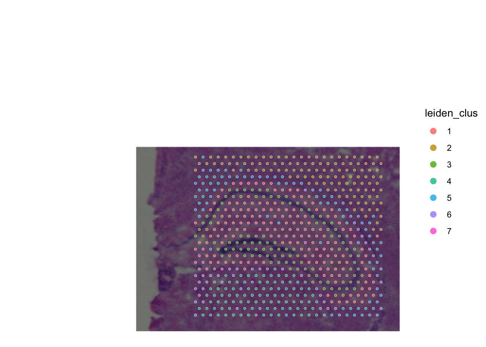
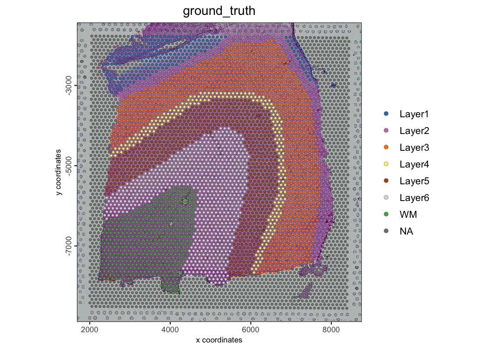

Interoperability: SpatialExperiment
Iqra Amin, Irzam Sarfraz
Source:vignettes/interoperability_spatialexperiment.Rmd
interoperability_spatialexperiment.Rmd1 Introduction
GiottoConnect
converts between Giotto and Bioconductor’s SpatialExperiment with
giottoToSpatialExperiment() and
spatialExperimentToGiotto(). SpatialFeatureExperiment
objects, which add geometries such as cell polygons, are converted the
same way.
This tutorial converts a Visium dataset in each direction and checks that the result can be used on the other side. For analysis with Bioconductor packages, see their own documentation.
2 Giotto to SpatialExperiment
We start from the mini Visium mouse brain object in GiottoData.
g <- loadGiottoMini(dataset = "visium")
spe <- giottoToSpatialExperiment(g, sfe = "no")
speclass: SpatialExperiment
dim: 634 624
metadata(1): giottoConnect
assays(3): counts logcounts scaled
rownames(634): Gna12 Ccnd2 ... 9630013A20Rik 2900040C04Rik
rowData names(6): nr_cells perc_cells ... mean_expr_det hvf
colnames(624): AAAGGGATGTAGCAAG-1 AAATGGCATGTCTTGT-1 ... TTGTGGCCCTGACAGT-1
TTGTTCAGTGTGCTAC-1
colData names(7): in_tissue nr_feats ... custom_leiden sample_id
reducedDimNames(5): PCA custom_pca UMAP custom_umap TSNE
mainExpName: NULL
altExpNames(0):
spatialCoords names(2) : x y
imgData names(4): sample_id image_id data scaleFactorOne spatial unit and feature type is converted at a time (the active
ones by default; see the spat_unit and
feat_type arguments). The raw counts become the
counts assay and the normalized values
logcounts. Reductions are named as in scater
(PCA, UMAP, TSNE), nearest
neighbour networks become colPairs and the tissue image
goes to imgData. By default, an object with polygons or
spatial networks (such as this one) becomes a SpatialFeatureExperiment,
which also holds the spot polygons and spatial networks. Here we ask for
a plain SpatialExperiment with sfe = "no", the class
ggspavis draws.
The Giotto clusters are part of colData, so they can be
shown on the tissue with ggspavis:
spe$leiden_clus <- factor(spe$leiden_clus)
plotVisium(spe, annotate = "leiden_clus")
readbackCheck() compares the SpatialExperiment with the
Giotto object, part by part:
readbackCheck(g, spe)3 SpatialExperiment to Giotto
The human DLPFC Visium sample from STexampleData comes with manually annotated cortical layers.
spe <- Visium_humanDLPFC()
g2 <- spatialExperimentToGiotto(spe)
g2An object of class giotto
>Active spat_unit: cell
>Active feat_type: rna
dimensions : 33538, 4992 (features, cells)
[SUBCELLULAR INFO]
[AGGREGATE INFO]
expression -----------------------
[cell][rna] raw
spatial locations ----------------
[cell] raw
attached images ------------------
images : hires
Use objHistory() to see steps and params usedThe counts become the raw expression values of the
feature type rna, the colData becomes the cell
metadata, the Visium spot positions are converted from image pixels to
microns, and reductions and the tissue image are carried over.
mappingProvenance() lists what could not be carried over or
was estimated:
mappingProvenance(g2)$losses part_id kind field
1 locs recovered_from_parameters units
note source
1 0.72991 um per px (100 um spot pitch / measured spacing 137.00 px) recordedThe annotated layers can be shown on the tissue with Giotto:
spatPlot2D(g2,
show_image = TRUE,
cell_color = "ground_truth",
point_size = 1.2
)
4 Session Info
R version 4.5.3 (2026-03-11)
Platform: aarch64-apple-darwin20
Running under: macOS Tahoe 26.7.3
Matrix products: default
BLAS: /Library/Frameworks/R.framework/Versions/4.5-arm64/Resources/lib/libRblas.0.dylib
LAPACK: /Library/Frameworks/R.framework/Versions/4.5-arm64/Resources/lib/libRlapack.dylib; LAPACK version 3.12.1
locale:
[1] C.UTF-8/C.UTF-8/C.UTF-8/C/C.UTF-8/C.UTF-8
time zone: America/New_York
tzcode source: internal
attached base packages:
[1] stats4 stats graphics grDevices utils datasets methods base
other attached packages:
[1] ggspavis_1.16.0 ggplot2_4.0.4 STexampleData_1.18.0
[4] ExperimentHub_3.0.0 AnnotationHub_4.0.0 BiocFileCache_3.0.0
[7] dbplyr_2.5.2 SpatialExperiment_1.20.0 SingleCellExperiment_1.32.0
[10] SummarizedExperiment_1.40.0 Biobase_2.70.0 GenomicRanges_1.62.1
[13] Seqinfo_1.0.0 IRanges_2.44.0 S4Vectors_0.48.1
[16] BiocGenerics_0.56.0 generics_0.1.4 MatrixGenerics_1.22.0
[19] matrixStats_1.5.0 GiottoConnect_0.1.0 GiottoData_0.3.8
[22] Giotto_4.3.7 GiottoClass_0.8.0
loaded via a namespace (and not attached):
[1] RColorBrewer_1.1-3 jsonlite_2.0.0 magrittr_2.0.5 magick_2.9.1
[5] farver_2.1.2 vctrs_0.7.3 memoise_2.0.1 GiottoUtils_0.2.10
[9] terra_1.9-11 htmltools_0.5.9 S4Arrays_1.10.1 curl_8.1.0
[13] BiocNeighbors_2.4.0 SparseArray_1.10.9 sctransform_0.4.3 parallelly_1.50.0
[17] KernSmooth_2.23-26 ica_1.0-3 htmlwidgets_1.6.4 plyr_1.8.9
[21] httr2_1.3.0 plotly_4.12.1 cachem_1.1.0 igraph_2.3.4
[25] lifecycle_1.0.5 ggside_0.4.1 pkgconfig_2.0.3 rsvd_1.0.5
[29] Matrix_1.7-5 R6_2.6.1 fastmap_1.2.0 future_1.82.0
[33] digest_0.6.39 colorspace_2.1-4 patchwork_1.3.2 AnnotationDbi_1.72.0
[37] Seurat_6.0.0 RSpectra_0.16-2 irlba_2.4.1 RSQLite_2.4.6
[41] beachmat_2.26.0 labeling_0.4.3 filelock_1.0.3 progressr_0.18.0
[45] httr_1.4.9 polyclip_1.10-7 abind_1.4-8 compiler_4.5.3
[49] proxy_0.4-29 bit64_4.6.0-1 withr_3.0.3 S7_1.0.0
[53] backports_1.5.1 BiocParallel_1.44.0 viridis_0.6.5 DBI_1.3.0
[57] fastDummies_1.7.6 ggforce_0.5.0 MASS_7.3-65 rappdirs_0.3.4
[61] DelayedArray_0.36.0 classInt_0.4-11 rjson_0.2.23 bluster_1.20.0
[65] gtools_3.9.5 units_1.0-1 GiottoVisuals_0.2.16 tools_4.5.3
[69] otel_0.3.0 future.apply_1.21.0 glue_1.8.1 sf_1.1-1
[73] grid_4.5.3 Rtsne_0.17 checkmate_2.3.4 reshape2_1.4.5
[77] cluster_2.1.8.2 hdf5r_1.3.12 gtable_0.3.6 class_7.3-23
[81] tidyr_1.3.2 data.table_1.18.6.1 BiocSingular_1.26.1 tidygraph_1.3.1
[85] ScaledMatrix_1.18.0 sp_2.2-1 XVector_0.50.0 RcppAnnoy_0.0.23
[89] tilework_1.0.0 stringr_1.6.0 RANN_2.6.2 ggrepel_0.9.8
[93] BiocVersion_3.22.0 pillar_1.11.1 RcppHNSW_0.6.0 spam_2.11-3
[97] dplyr_1.2.1 tweenr_2.0.3 lattice_0.22-9 bit_4.6.0
[101] tidyselect_1.2.1 pbapply_1.7-5 Biostrings_2.78.0 gridExtra_2.3.1
[105] scattermore_1.2 pls_2.9-0 graphlayouts_1.2.3 stringi_1.8.9
[109] yaml_2.3.12 codetools_0.2-20 ggraph_2.2.2 tibble_3.3.1
[113] BiocManager_1.30.27 colorRamp2_0.1.0 cli_3.6.6 uwot_0.2.4
[117] dichromat_2.0-0.1 Rcpp_1.1.2 globals_0.20.0 png_0.1-9
[121] parallel_4.5.3 blob_1.3.0 dotCall64_1.2 listenv_1.1.0
[125] viridisLite_0.4.3 e1071_1.7-17 ggridges_0.5.7 scales_1.4.0
[129] SeuratObject_5.4.0 purrr_1.2.2 crayon_1.5.3 rlang_1.3.0
[133] cowplot_1.2.0 KEGGREST_1.50.0